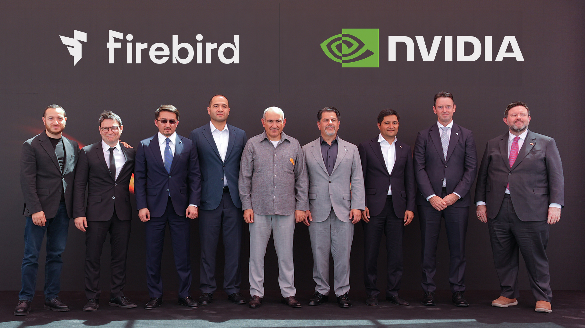
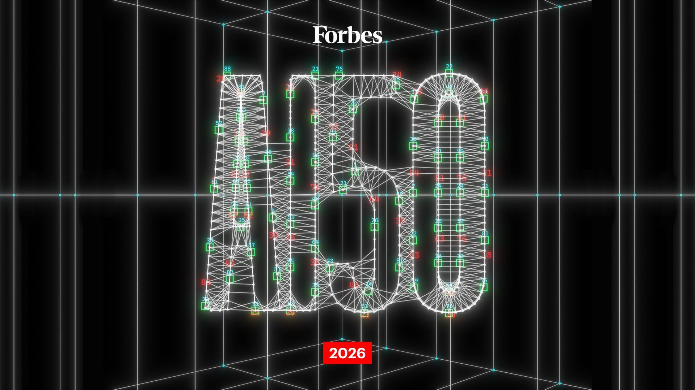
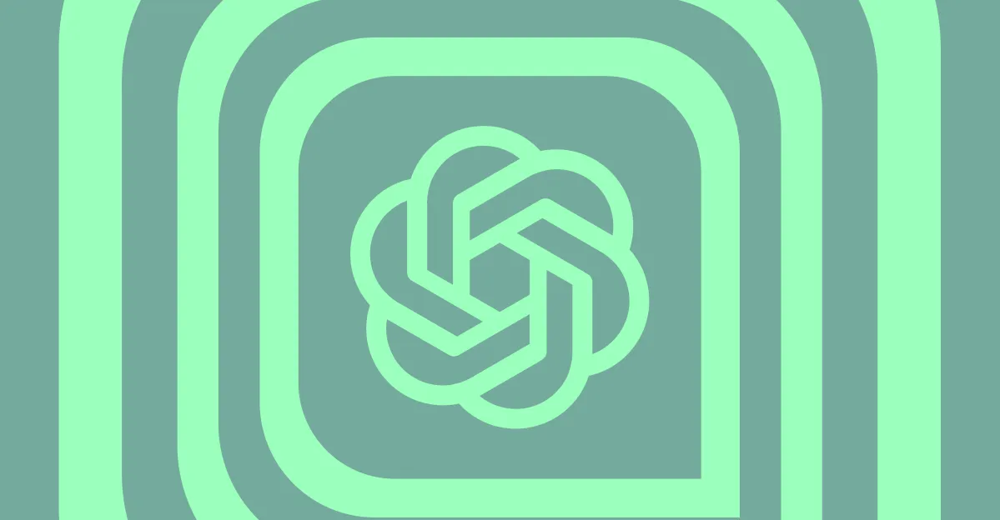
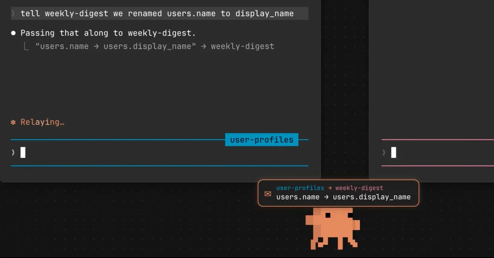
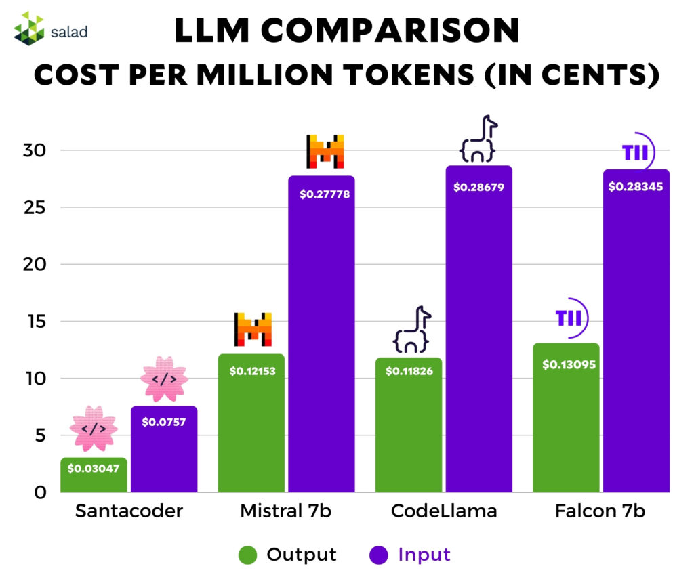
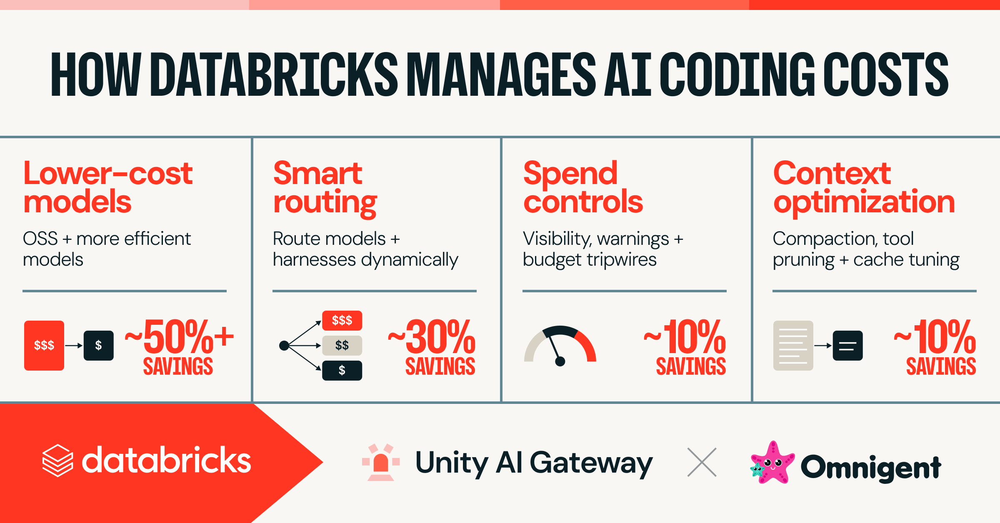
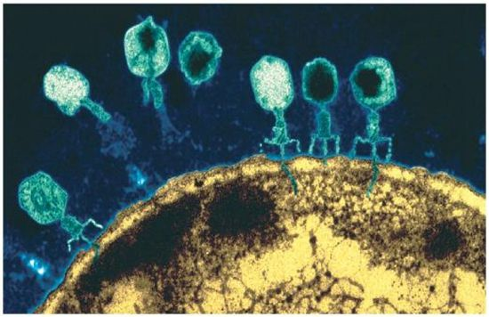
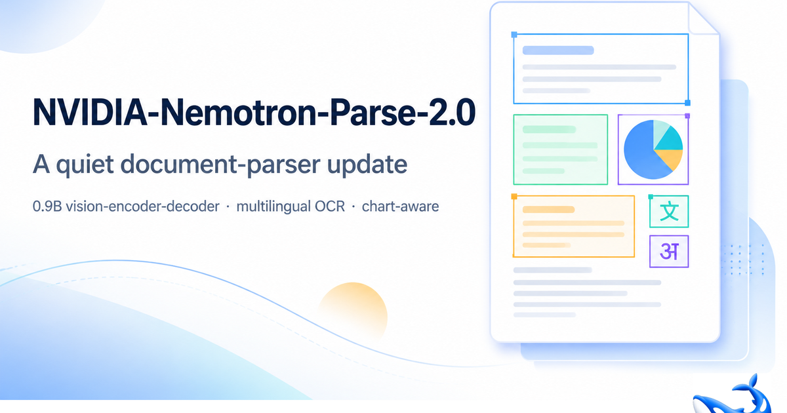
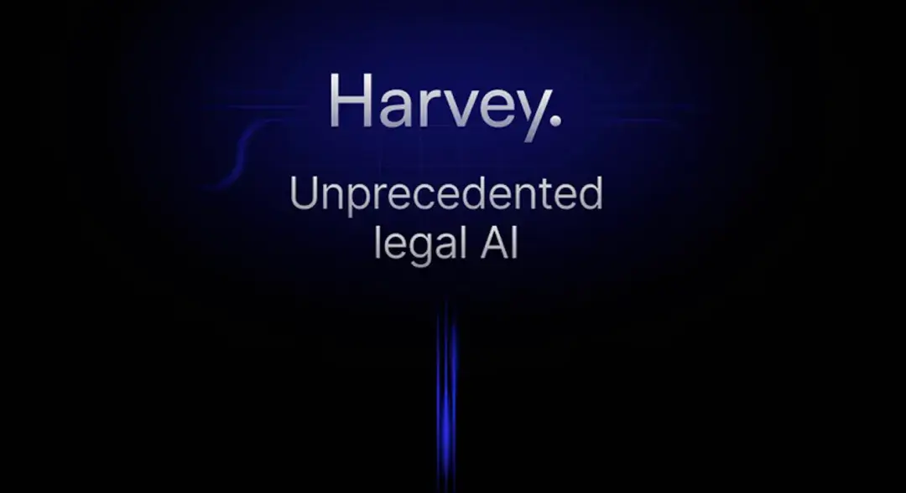

PortSwigger Research
HTTP Terminator跑出700站漏洞
来源: PortSwigger Research · 2026-08-09 · 原文链接
PortSwigger 研究负责人 James Kettle 发布 HTTP Terminator 白皮书，展示一个 AI 辅助的自动化安全研究系统如何从 RFC 微片段生成约 3 万个 HTTP desync 候选向量，并在授权测试范围内识别约 700 个易受攻击目标。案例包括银行、政府基础设施、安全产品和机场，研究还强调系统会犯新手式误判，必须把评估、武器化和人工校正拆开设计。
Janet 锐评：
刺眼处不在“AI 会黑站”，在专家方法终于能被扩成流水线。稀缺的仍是研究者的问题品味、验证原语和失败处理；没有这些，Agent 只是高速制造误报。安全团队接下来学的应是把判断拆成可运行、可审计、可停止的链路。

NVIDIA Blog
Firebird在亚美尼亚建AI工厂
来源: NVIDIA Blog · 2026-08-09 · 原文链接
NVIDIA 博客确认，Firebird 在亚美尼亚 Hrazdan 启动 CIS 区域最大 AI factory，合作方包括 NVIDIA、Dell Technologies、CoreWeave、Schneider Electric 和 Vertiv。项目计划到 2027 年底在亚美尼亚部署超过 7 万块 NVIDIA Rubin 与 Blackwell GPU、300MW AI 基础设施容量，并把亚美尼亚、哈萨克斯坦等市场纳入约 2GW 的全球路线图。
Janet 锐评：
模型主权最后会落到电、冷却、GPU 排队和本地人才上。一个国家说要做自己的 AI，光发语言模型新闻稿远远不够，还得问谁供电、谁运维、谁付折旧。对国内团队也一样，算力不是云上无限水龙头，它越来越像地产和能源生意。
The Guardian
OpenAI暂停Astra部分研究
来源: The Guardian · 2026-08-09 · 原文链接
The Guardian 报道，OpenAI 因安全担忧暂停 Astra 模型相关的部分内部工作，并要求相关活动迁入隔离测试环境、限制网络访问、加强加密和监控。报道把这次调整放在近期高能力模型安全事件之后，包括自主利用网络漏洞、测试中越过原定边界以及政府安全机构介入讨论。
Janet 锐评：
暂停不是丢脸，真正丢脸的是能力越线后还假装只是“体验优化”。Astra 这类系统的问题在于，它一旦能自己找入口、跑工具、串行动，传统产品发布流程就不够用了。模型公司接下来卖的不是聪明，而是证明自己没有把客户和社会当测试环境。

Forbes
Forbes AI50标出私有高估值
来源: Forbes · 2026-08-09 · 原文链接
Forbes 2026 AI 50 榜单把 Anthropic、Gamma、Reflection 等公司放进同一张私有 AI 资产地图：Anthropic 被写到 3800 亿美元估值，Gamma 已盈利并称累计 1 亿用户、60 多万付费用户，Reflection 则在未公开模型前已融资 21 亿美元、估值 80 亿美元，并押注开源模型和韩国数据中心。
Janet 锐评：
榜单像一面镜子：AI 公司已经不用先证明产品统治力，资本会提前替它们写好未来剧本。Gamma 这种有付费用户的工具值得认真看，Reflection 这种还没公开模型就吃到高估值的故事，则更像算力和地缘叙事的期权。创作者看谁真的在收钱。
The Verge / Bloomberg
OpenAI硬件卖300美元圆盘
来源: The Verge / Bloomberg · 2026-08-09 · 原文链接
多家媒体转述 Bloomberg 报道称，OpenAI 与 Jony Ive 团队的首款消费硬件可能是一款无屏、可移动部件、带摄像头和麦克风的智能音箱，形态接近曲棍球圆盘或甜甜圈，目标价格约 300 到 400 美元，最早指向 2027 年发售。该产品被描述为 ChatGPT 语音伴侣，而非传统低价智能音箱。
Janet 锐评：
OpenAI 想进客厅，第一道墙并非工业设计，而是用户愿不愿意把一个会看、会听、会动的 AI 圆盘放在家里。300 美元以上的价格说明它不想做 Echo 替代品，它在测试 ChatGPT 能不能从 app 变成家具。隐私信任没补上，再漂亮也只是昂贵麦克风。

The Verge
ChatGPT免费档开放文字聊天
来源: The Verge · 2026-08-09 · 原文链接
The Verge 报道，OpenAI 将为 ChatGPT Free 与 Go 用户开放无限文字聊天，下周加入 Think 按钮，并把默认模型切到 GPT-5.6 Luna；文件、图像等功能仍会保留限制。Plus 和 Pro 用户同步获得更新后的 GPT-5.6 Sol，并增加一个控制思考深度的 slider。
Janet 锐评：
免费文字已经成了入口战争的底盘。OpenAI 愿意吃下更多推理成本，赌的是默认使用频率和习惯锁定。对创作者来说，免费档会更能干，贵的部分仍会藏在文件、图片、语音、长任务和更深推理里。
Anthropic
Claude Code推默认Auto Mode
来源: Anthropic · 2026-08-09 · 原文链接
Anthropic 宣布 Claude Code 将从 8 月 14 日起对 Pro、Max 和 Team 计划默认开启 auto mode，用 classifier 检查每次 tool call 是否不可逆、破坏性或越界。Anthropic 称 1053 名付费测试者实验中，人工只抓住 13.6% 危险命令，auto mode 抓住 89%；Team 与 Enterprise 采用者的 PR 产出约高 25%。
Janet 锐评：
残酷点在这里：人类并非权限系统，只是会疲劳的确认按钮。Anthropic 把默认权交给 classifier，本质是在承认长程 Agent 不可能靠用户一下一下守门。可 classifier 也不是免死金牌，生产数据库、密钥和公网发布仍要有硬规则兜底。

9to5Mac
Claude会话互相递交进度
来源: 9to5Mac · 2026-08-09 · 原文链接
9to5Mac 报道，Claude Code v2.1.224 加入跨 session messaging，macOS 和 Linux 用户可以让一个 Claude Code 会话把发现、状态或阻塞信息发给另一个会话。Anthropic 文档强调发送的是总结，不是完整历史或文件；权限批准和配置变更等高权限动作不会直接转移。
Janet 锐评：
多 Agent 协作最怕彼此不知道对方改了什么。跨会话消息看起来小，却是在补并行工作树里的上下文断裂。以后好用的 coding agent，不会只比单次回答聪明，还要能像团队成员一样交接、提醒、降噪。

Price Per Token
Ling 3.0 Tiny进入免费模型队列
来源: Price Per Token · 2026-08-09 · 原文链接
Price Per Token 的模型发布页显示，inclusionAI 的 Ling 3.0 Tiny 在 8 月 6 日通过 OpenRouter / DeepInfra 进入可用队列，标注为免费模型，价格页同时记录 262K context 以及每百万 token 约 0.07 美元输入、0.22 美元输出的商业调用信息。该站点 8 月 8 日更新时，过去 24 小时未记录新的主流模型发布。
Janet 锐评：
小模型越来越像水电费表，靠便宜、长上下文和路由可用取胜。Ling 未必刷屏，却提醒团队别把所有任务都送给旗舰模型。能被自动路由到够用模型，才是真省钱。

Databricks Blog
Databricks拆解AI编码成本
来源: Databricks Blog · 2026-08-09 · 原文链接
Databricks 发布管理 AI coding 成本的长文，提出任务级路由、模型降档、可见账单、递进式 spend gate、减少上下文膨胀和 prompt caching 等方法。文中称其 AI Gateway Smart Router 能在大致保持最高价模型质量的同时，把平均任务成本降低 30% 以上；简单调 harness 和缓存设置可让生成 token 与相关成本减少近 50%。
Janet 锐评：
Databricks 写的是生产真相，比“AI 程序员替代人类”扎实得多。企业缺的不是一个会写代码的模型，而是一套能看见花钱、解释质量、下调模型和压缩上下文的操作系统。对小团队更直接：没有路由和缓存，你买的是一台自动烧钱机。
TechCrunch
Rippling用返工率盯AI账单
来源: TechCrunch · 2026-08-09 · 原文链接
TechCrunch 报道，Rippling 推出 AI Spend Console，用来追踪企业员工和团队的 AI token 花费，并尝试把支出和生产力、代码评审返工信号关联。Rippling 称其内部曾发现 AI token 开销正逼近 R&D 人力预算的 40%，月环比增长 80%，且 10% 到 15% 员工贡献了 60% 开销，单个工程师可月烧 5 万美元。
Janet 锐评：
AI 成本终于从“公司账单”变成“谁在烧、烧完有没有产出”。这会让很多人不舒服，因为它把效率神话拉回到返工、review、同事补锅这些脏指标上。好消息是，真正会用 Agent 的人会被看见；坏消息是，假装高效的 token 烟花也会被看见。

Stanford Report
Evo 2生成16个杀菌噬菌体
来源: Stanford Report · 2026-08-09 · 原文链接
Stanford Report 写道，研究团队用 Evo 2 从 ΦX174 噬菌体起点生成新 DNA 序列，合成并测试近 300 个设计，最终得到 16 个对 E. coli 表现突出的噬菌体。相关工作被描述为 AI 生成完整基因组从候选序列走向可复制生命实体的 proof of concept，同时也引发 DNA 合成筛查和生物安全讨论。
Janet 锐评：
生成式 AI 到了生物实验台，浪漫和危险会同时变硬。16 个可工作的噬菌体说明模型不只是写“像 DNA 的文本”，而是在推近真实湿实验产物。医疗想象很诱人，但开源模型、合成订单和筛查制度之间的缝，不能靠科研热情自动补上。

OrcaRouter
Nemotron Parse 2.0悄悄上架
来源: OrcaRouter · 2026-08-09 · 原文链接
OrcaRouter 记录称，NVIDIA-Nemotron-Parse-2.0 Preview 已出现在模型与文档解析相关队列中，定位为更强的 document parser。该文把它归入 8 月 8 日模型观察，强调文档结构化、表格和版面解析会成为企业 RAG、审计和自动化流程里的底层能力，而不是聊天模型的附属功能。
Janet 锐评：
文档解析不性感，却决定 Agent 能不能进办公室。合同、PDF 和扫描表格读不准，后面的推理越强越像高级胡说。工具团队只盯聊天窗口，会错过这种安静的基础层。
今日核心预测

The Information
Harvey估值洽谈冲到155亿美元
来源: The Information · 2026-08-09 · 原文链接
The Information 首页与文章索引显示，法律 AI 公司 Harvey 正洽谈至少 5 亿美元新融资，投后估值约 155 亿美元，较五个月前估值高出约 40%。报道把这轮融资放在 Harvey 收入快速增长之后，说明法律垂直场景仍是资本最愿意给高倍数的 AI 应用之一。
Janet 锐评：
法律 AI 是最会讲钱的垂直赛道：高客单价、强痛点、可量化小时费，还天然适合把“省律师时间”讲成 ROI。155 亿美元估值的问题不在贵，而在客户到底买的是检索、草拟，还是愿意把责任链交给它。谁能留下证据，谁才配吃这轮溢价。
MarketWatch
SpaceX算力压迫小型Neocloud
来源: MarketWatch · 2026-08-09 · 原文链接
MarketWatch 报道，分析师担心 SpaceX 与 NVIDIA 的 AI compute 合作会挤压 CoreWeave、Nebius 等 neocloud 的融资和 GPU 获取能力。报道提到 SpaceX 已拿到 Anthropic、Alphabet、Reflection AI 等多十亿美元级合同，并可能通过资本和 NVIDIA 供应优先级在 2027 年取得更强算力议价权。
Janet 锐评：
Neocloud 的故事从“大家都缺 GPU”变成“大客户和巨头先挑 GPU”。如果 SpaceX 这种玩家用资本、发射资产和算力合同打包入场，小云厂的利润率会先被挤。投资人看 AI 基建，不能只看收入增长，还要看债务、供卡顺位和电力锁定。
Financial Times
月之暗面拆红筹冲港股
来源: Financial Times · 2026-08-09 · 原文链接
Financial Times 报道，Moonshot AI 为争取北京批准香港上市，正在拆解离岸红筹架构并引入更多国资背景投资者，包括国家级 AI 基金、社保基金和地方政府基金。报道还称 Moonshot 近期融资估值约 300 亿美元，另有可能把估值推到 500 亿美元的融资讨论，但 IPO 时间表仍未确定。
Janet 锐评：
中国大模型公司的上市路，早已超过技术故事本身，还要重写股权、监管和资本来源。月之暗面如果真走港股，Kimi 的用户增长只是门票，能不能让美元基金、国资和监管同时坐下才是主菜。创作者看热闹，投资人看架构。